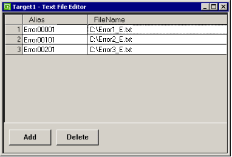
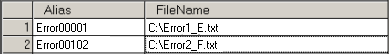
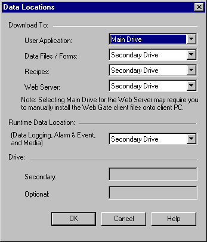
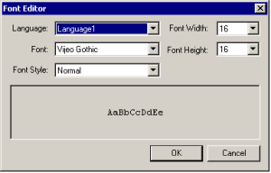
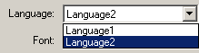

|
|
|
|
|
|
|
|
With Text Display, you can display a different text file depending on the current language.
You can, for instance, display an English text file when you are in an English environment or a French file when you are in a French environment. This means that you can set up a single project with multiple languages and reduce maintenance costs, because you do not have to create French and English project files separately.

This section explains how to switch text files in the Text Display according to language.
Set up multiple languages in Vijeo-Designer.
You can define up to 15 languages. For more information on setting up languages, see Section 20.2, Switching Languages.
Create text display files for each language using any text editor such as Microsoft Notepad. Always save with Unicode character encoding regardless of the language.
In the Navigator window's Project tab, double-click Environment under the Target node, double-click Data Files, and then right-click the Text node to open the Text File Editor.
Define a text file in the File Name field. When the location of a text file is specified, the Alias field fills in automatically with the name of the file without the extension. You can change the alias to a different name.

To each alias, append two digits to identify the user language. The language ID must be between 00 and 99. If your project has user Language IDs that exceed this range, they cannot be used with the text display.


Language ID
In Vijeo-Designer, you can add up to 15 languages to a single project. Each language is assigned a language ID when it is created. To switch between languages in the Text Display, you must enter the language ID after the alias to match the corresponding user language.
You can check the ID for a particular language by checking the language node properties in the Languages node. You can edit the ID for each language.
For more information, see Section 20.2, Switching Languages.
Click Add. Repeat steps 2 to 5 to add all the text files and use the same alias for all the files. Only the language ID can be different.

Example:
Alias: Error
Language ID 01 = Error_E.txt
Language ID 02 = Error_F.txt
When you use the above 2 text files, your entries should look like this:

Select the location the text files are stored.

|
Main Drive |
Downloads text files to internal memory (flash memory). |
|
Secondary Drive |
Downloads text files to the Secondary Drive. |
|
Optional Drive |
Downloads text files to the Optional Drive. |
Click the Toolchest icon  to open the Toolchest window, and select the Text Display folder.
to open the Toolchest window, and select the Text Display folder.
Move the Text Display onto the panel using the drag and drop operation.
In the Property Inspector, edit the AliasName and Font properties.
Define other properties if necessary. You can combine the File Number, Block Number, and Line Number together in the same Text Display.
In AliasName, enter the text file alias, without the two-digit language ID
In the Font property, define the font used to display the text in the corresponding language. Click  to display the Font Editor dialog box and define the font for each language.
to display the Font Editor dialog box and define the font for each language.
Example:
Language1 = English text file and Language2 = Japanese text file
Choose an English font for Language1.

Switch to Language2 and select a Japanese font.


Text Display and Language Font
Text Display does not use the LanguageFont defined for each Language node. The text display uses the font as defined in the text object's TextFont property.
For more information about using LanguageFont, see Section 20.2, Switching Languages.
At runtime, you can switch languages using one of two methods:
Touching a Change Application Language switch.

Entering a value in the User Application Language system variable.

The text display updates to display the defined text file with the corresponding font. For more information about switching languages, see Section 20.2, Switching Languages.

You can switch languages and text files with a single command by entering a file ID and language ID after the alias.

Example:

File ID 000 (Language1) = Error1_E.txt
File ID 001 (Language2) = Error2_F.txt
File ID 002 (Language1) = Error3_E.txt